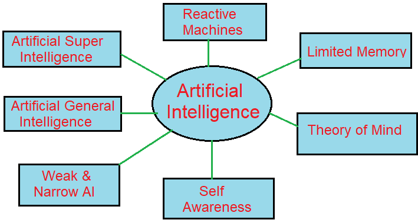

Artificial intelligence
Artificial intelligence ek technology ha.jeske dura intelligent machine ko bannya jata ha.jo ki human ki
tarha soch sakete ha. in other words ai ek method ha.jeska use krane per ek computer, robort and machine
human ki taraha sochta ha.
artifical ka means hota haa. ki human ki duara banaya gaya.or intelligence ka means ha ki thinging power
esliye eseka pura means hua human ke dura bane hue sochne ki sakti artifical intelligence kaha jata ha.
artifical intelligence ko machine intelligence bhi kaha jata ha.
esme machine ke aander human ki taraha sochne or work karne ki chamta ko peda kiya jata ha. jese ki human ki
taraha baat karna ,yaad rakhna, sikhna, decision lena or kesi problem ko solve karna etc. artifical
intelligence se human ke jevan ko or jada aasan banaya ja sake.

Level of ARTIFICIAL Intelligence

1. Reactive Machine :-
reactive machine artifical intelligence ka sabse saral type ha yaha machine basic work ko pura karti ha.
yaha user ki need ke aanuser rect karti ha. esliye ese reactive machine kahte ha.
reactive machine only present time ke work per focus karti ha.
Example of reactive machine google ka
alphago.
2. Limited Memory :-
Limited Memory type of ai.jo purane data ko tempoarary store karke rakh sakta ha.yaha purane data ki help se
future ko predict karne ki chamta rakhti ha.
limited memory ki help se future ko predict kiya t ja sakta
ha.lekin yaha predicatio puri taraha sahi nhi bhi ho sakta kyuki yaha predicatio purani dat ki aadar per
kiya jata ha.
limited memory ko use apne se chalne bali car me kiya jata ha.yaha car apni aasa pass ki
cars ki speed unke beech ki duri or dushri information ko store karke rakh sakta ha.
Example of limited
memory tesla car.
3. Theory Of Mind :-
theory of mind ek type ka ai ha.human ke thoughts ko samjh kar unse baat kar sakte ha.jese 2 human apas me
baat karte ha bese he theroy of mind me computer or human baat karte ha.yah techinology puri tarha se
develop nhi hue ha.es techinologyper abhi resourch chal rahi ha.
4. Self-Awareness :-
self-awareness ai artifical intelligence ka future ha. yah ai bahut he jayda intelligent hoga.or eske pass
apne emotion, mind,consiousness hoga.yah ai ka mind human se fast hoga.
aane bale time me self awareness
ki bajha se digital computer ya robort human se bhi jada intelligent or smart ho jaygi or us time ki machine
self-aware hogi or right wrong ka decision le skegi.yaha technology aane bale time me aane bali ha.
5. Artificial Narrow Intelligence (ANI) :-
es ai ko waek ai bhi kaha jata ha. ya ai kisi special work ko complete kar sakta ha.or yaha en special work
ke baad outher work nhi karta ha. eskiye ese weak ai kaha jata ha.
weak ai human ki taraha behave nhi kar
sakti leken parameter and contexts ke aadar per human ke behaver ko samjh sakta ha or human se baat kar
skata ha.weak ai apne work ko pura karne ke liye natural language ka use karti ha.
Narrow ai ka Example
IBM ka watson supercomputer ha.
6. Artificial General Intelligence (AGI) :-
Artificial genteral intelligence ko strong ai kaha jata ha.yaha ek General intelligence ki technology ha jo
kisi problem ko apne tarike se solve karti ha. AGI human ke behaver ko samjh sakti ha. or human ki tarah
behave kar sakti ha.
AGI humsn ki tsrhs kisi bhi work ko badi aashni se complete karta ha.eka develop
abhi pura nhi huaa ha abhi resarch chal rahi ha.
7. Artificial super Intelligence :-
ASI ek esa artificial intelligence ha. jeame machine human se bhi jada intelligent hogi and bo human ki
tulna me kisi work ko aasani se or teji se kar sakegi. ASI ke pass bahut sari chamta hogi jese ki sochne,
puzzle ko solve karna, learn karna, plan karna and khud se baat karna etc.
ASI ek kalpanik ai ha. jo
prasent time per nhi ha. lekin aane bale time me ASI technology dekhne ko mil sakti ha.
ASI technology ke
device self-aware ho jaygi jo sahi or galt ko decision se lene me sakcham hoge.
Application Of Artificial Intelligence
1. E-commerce :-
ai technology ka use e-commerce yani online shopping ke liye kiya jata ha. eska use AMAZON company karti ha.
jeske castmer ko product ka size ,color and brand pata chalta ha.
eski help se apps and website me
chatbot ka nirmad kiya jata ha. chatbot sidhe costmer se baat kar sakte ha. jeske liye hamne kisi human ki
need mji padti.
2. Education :-
ai technology ka use education ke place me kiya jata tha. taki behter se behter education logo tak pahucha
sake.eske duara teacher aasani se kisi bhi child ko computer me animation and graphics dekhakar pada sakte
ha.ai ke duara syudent ko mark dena bhi aasan ho jata ha.jese teacher ka time bachta ha.ai technology
productivity and digital education ko badava deta ha jeskw main gola education ko easy bana hota ha.
3. Easy Lifestyle :-
Artificial Intelligence ka use lifestyle ko or bhi jada advance and modern banya ja sake. jeske karan human
apne work ko samart tarike se kar sake. eski help se hum aajkal hum apneface se phone ko unlock kar sakte
ha. or hamre ger me smart device hoti ha.
4. Human Resources :-
es ka use human resources ko work karne ke liye bhi kiya jata ha. taki prodect ka production jada mata me
kiya ja sake kyuki human 24 hours work karne ki chamta rakhta ha.
5. Medical :-
es ka use medical ke place me bhi kiya jata ha. ai device ka use aaj ke time me chota bade hospital me kiya
jata ha. eska use karke patient ki bemari ka pata lagya jata ha. or bimari ko thik kiya jata ha.
6. Agriculture :-
eska use kheto me fasal or soil ki quality ko check karne ke liye kiya jata ha.ai technology ki help se soil
ki kamiya ko pahchna ja sakta ha or us soil me sudaher kiya ja skta ha.
7. Marketing :-
Artificial intelligence ka use marketing karne ke liye bhi kiya jata ha. kyuki ai ki help se data ko anlyze
kiya ja skta ha. jeske karne company ko yaha pata chal jata ha ki kis time konse product ki demand badne ya
gatne bali ha.
8. Astronomy :-
uski help se antrikch ki hard problem ko aasan i se solve kiya ja sakta ha.eski help se hum yaha jan sakte
ha. ki antrikch kese work karta ha. or uski devlopment kese huaa ha.
9. Gaming :-
gaming me ai use aajkal bahut bad gaya ha. jese ki chess or puzzle ke game me uska use kiya jata ha. ai ke
pass sochne ki chamta hoti ha. esliye eska use mind game me kiya jata ha.
10. Banking :-
banking me artificial intelligence ka use costmer ke account ki information dene or unke liye usme chatbotka
use kiya jata ha.kesi bhi person or company ke liye uska data bahut he important hota ha. eslie usko secure rakhna bhi jaruri
hota ha. taki hacker se data ko bachya ja sake aajkal badi company me data ko secure rakhne ke liye ai ka
use kiya jata ha
11. Entertainment :-
Type Of Artificial Intelligence
Deep Learning
Machine Learning
artifical Intelligence